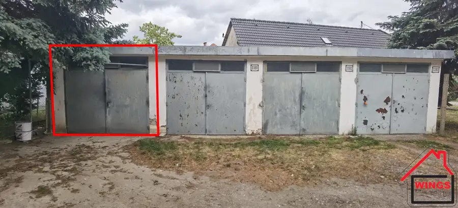
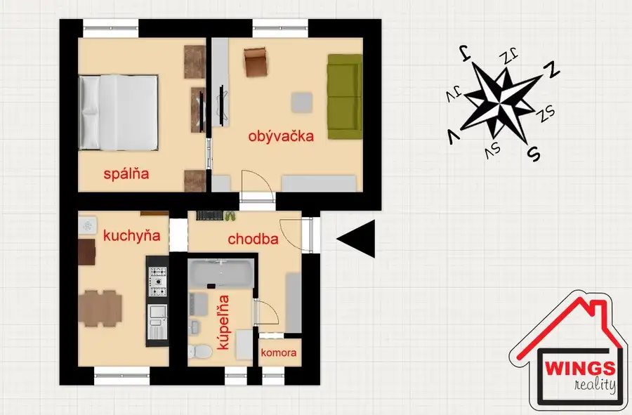
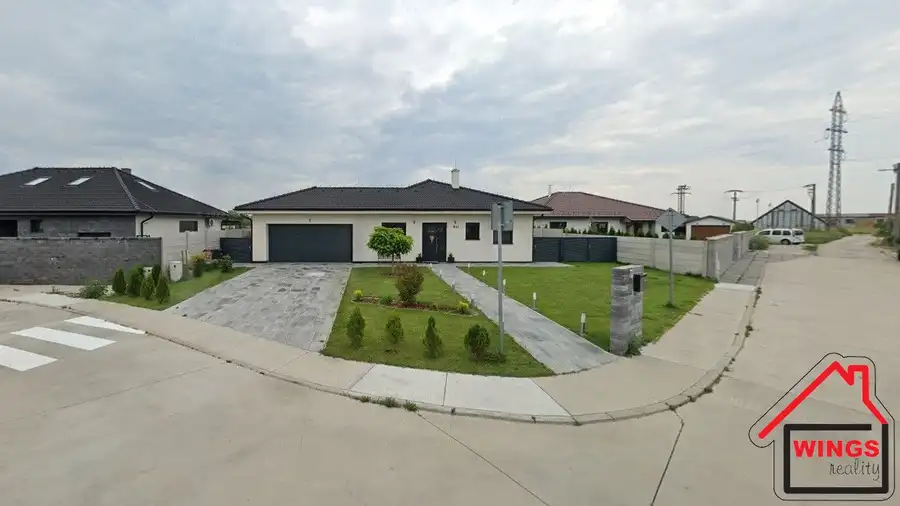

Prenájom administratívna budova Sereď Niklová ul.
Sereď
- Plocha419 m²
- StavČiastočná rekonštrukcia
- VlastníctvoOsobné
O nehnuteľnosti
Ponúkame Vám na prenájom administratívnu budovu v Seredi v priemyselnom areály bývalej Niklovej hute.Celková podlahová plocha priestorov predstavuje 419m2.Stav objektu: čiastočná rekonštrukcia.Cena prenájmu sa dohodne na miestnej obhliadke, resp. podľa veľkosti prenajatých miestností.Bližšie informácie Vám poskytneme na kontaktoch:Jonáš Irsák0950 333 424irsak@wingsreality.euZabezpečujeme právne poradenstvo, vyhotovenie kúpno-predajných zmlúv, autorizované zmluvy - a to všetko v jednej budove.V cene našej služby je uhradenie správneho poplatku za návrh na vklad do katastra nehnuteľností, vyhotovenie zmlúv právnikom.Pomôžeme Vám s financovaním Vami vybratej nehnuteľnosti. Sprostredkujeme Vám najvýhodnejšiu hypotéku ktorú si môžete vybrať z niekoľkých ponúk zo všetkých bánk na Slovensku.Realitná kancelária WINGSreality je členom REALITNEJ ÚNIE SLOVENSKEJ REPUBLIKY
Parametre
| Druh | Administratívny objekt |
|---|---|
| Dátum zverejnenia | 10. 8. 2023 |
| Počet izieb / miestností | 15 |
| Stav nehnuteľnosti | Čiastočná rekonštrukcia |
| Typ | Prenájom |
| Vlastníctvo | Osobné |
| Úžitková plocha | 419 m² |
Kde to je


Mohlo by Vás zaujímať

Komerčné priestoryNové7 18 500 €Predaj garáž, Kukučínova ul. Sereď Sereď 16 m² Ponúkame Vám na predaj murovanú garáž v oplotenom pozemku na križovatke Kukučínova a Školská ul.Bez elektriky, bez montážnej jamy. V ponuke sú dve…
BytNové10 122 000 €2 izbový byt Spádová ul. Sereď Sereď 2-izbový56 m²3. podlažie Vo výhradnom zastúpení Vám ponúkame na predaj 2 izbový zmodernizovaný byt na Spádovej ul. v SerediJedná sa o najtichšiu lokalitu obklopenú…
DomNové10 355 000 €Výrazne znížená cena !!! Novostavba RD Dolná Streda Nová ul. Dolná Streda 106 m² Ponúkame Vám na predaj novostavbu 4 izbového rodinného domu na Novej ul. v Dolnej Strede.Dom sa nachádza na pozemku o rozlohe 750 m2. Jedná sa o…